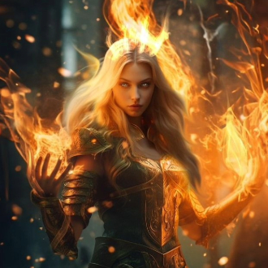
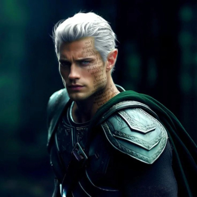
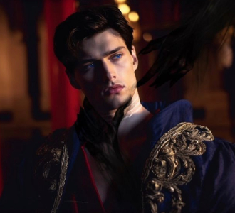
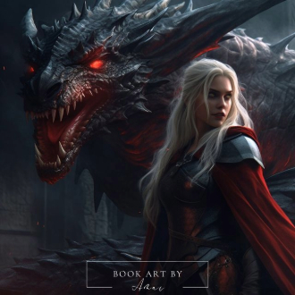
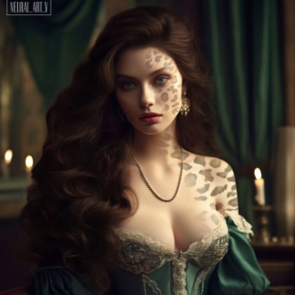
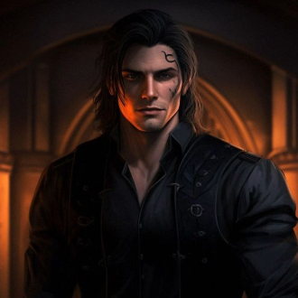
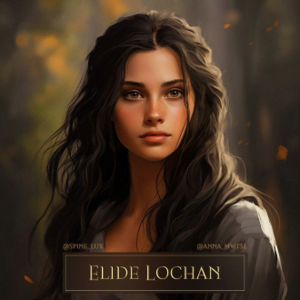

-
Aelin Galathynius
Descrição
Alien ashryver galathynius, herdeira do poder de fogo e portadora da luz. A atual rainha de Terrasen, é conhecida por: rainha que fora prometida, rainha que andou entre mundos,elentiya, coração de fogo e matadora de deuses. Aelin não se rende perante ninguém.
-
Rowan Whitethorn
Descrição
Rowan Whitethorn é um príncipe feérico, guerreiro, e antigo membro dos seis guerreiros de elite do Cadre de Maeve. Ele atual é Rei-Consorte da Rainha de Terrasen, Aelin Galathynius sua parceira. Possui o poder de metamorfose em um gavião, relâmpago, gelo e vento.
-
Dorian Haviliard
Descrição
O rei Dorian Havilliard é o filho primogênito do falecido Rei de Adarlan. Possue magia pura, capaz de ser moldado na forma em que o portador desejasse. É conhecido pela sua personalidade cativante e por ser extremamente belo.
-
Manon Bico Negro
Descrição
Manon Bico Negro é uma bela bruxa metade Dentes de Ferro, metade Crochan. Ela é a antiga herdeira do Clã de Bruxas Bico Negro e uma atual Rainha Crochan. Manon ama voar com sua serpente alada Abraxos, é conhecida por ter um grande desenvolvimento, de inicio era conhecida como vilã e se tornou uma heroina.
-
Lysandra
Descrição
Lysandra prova ser um membro leal e corajoso da nova corte de Terrasen, amiga de Aelin. Lysandra é uma metamorfa e pode se transformar em qualquer animal ou humano que ela queira. Ela prefere sua forma de leopardo fantasma, é destemida e prova conseguir fazer de tudo para manter Terrasen a salva.
-
Lorcan
Descrição
Lorcan Salvaterre é talvez o semifeérico mais poderoso existente, é incrivelmente habilidoso em combate, tendo treinado como guerreiro por séculos. Ele está atualmente jurado de sangue a Aelin. E sempre obedece sua mulher, Elide.
-
Elide Lochan
Descrição
Elide Lochan é filha de Lord Cal Lochan e Lady Marion Lochan e um membro do clã de bruxas Bico Negro. Elide é muito Inteligente e sagaz. É descrita como muito esperta, e fiel a sua rainha Aelin. Elide é astuta e corajosa e sempre faz de tudo para conquistar algo em que almeja.